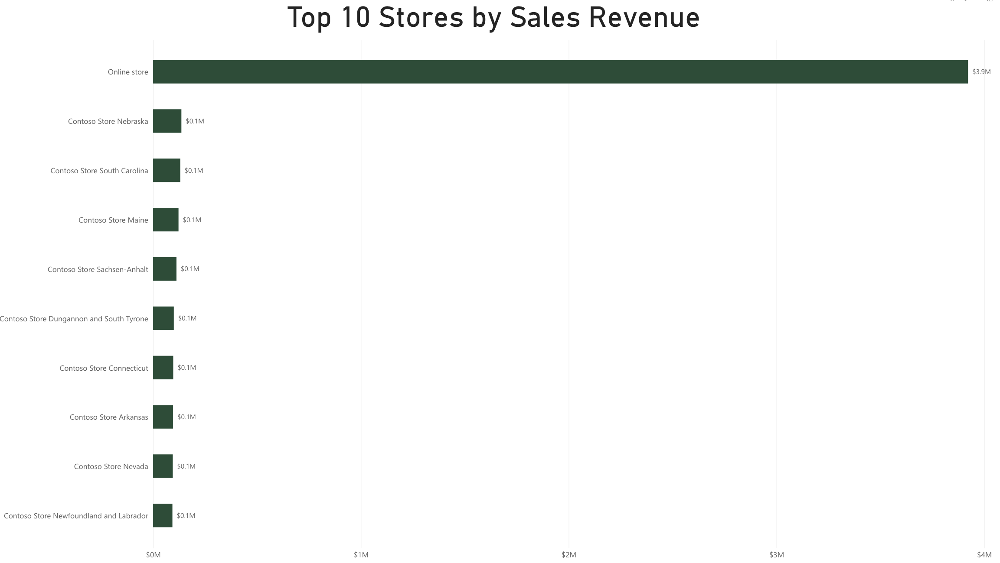

Power BI Sales Data Analysis - Ashton Hatch
What are our top selling stores by sales revenue?

This chart compares the ten store locations that generated the most sales revenue. The online store is included along with physical store locations.
The online store generated approximately $3.9 million in revenue which was much higher than any individual physical store. Contoso Store Nebraska was the highest physical store shown in the chart.
This shows how important online shopping is to the company's overall sales.
Previous Page Next Page